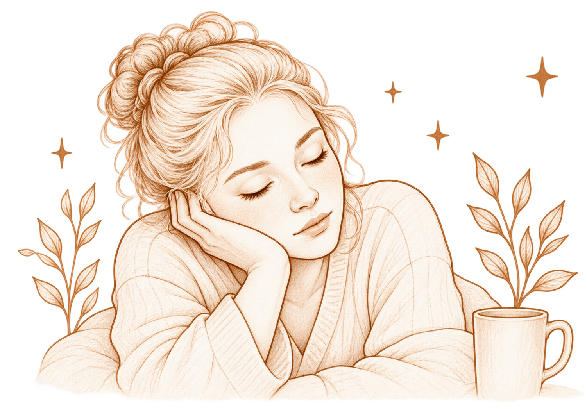
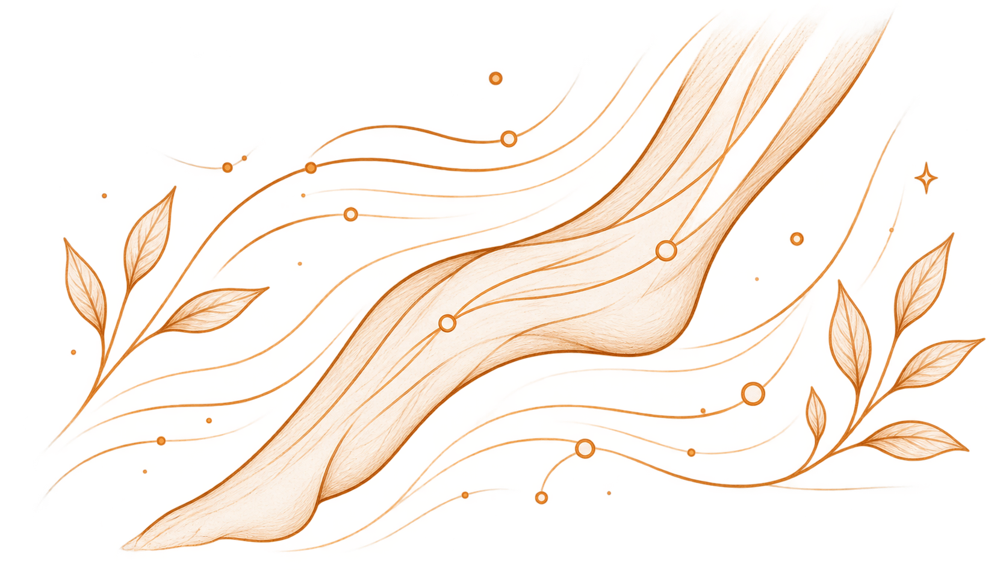
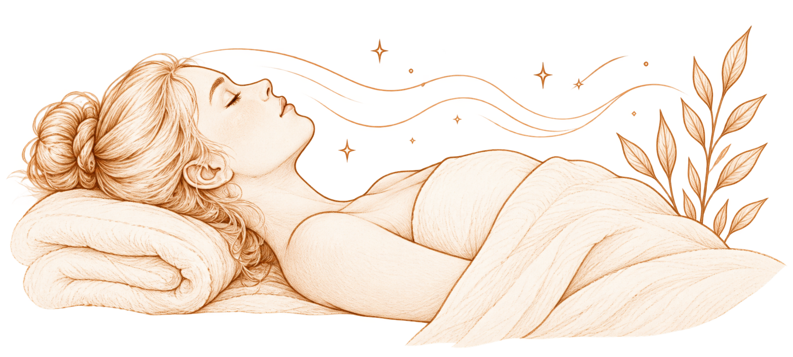
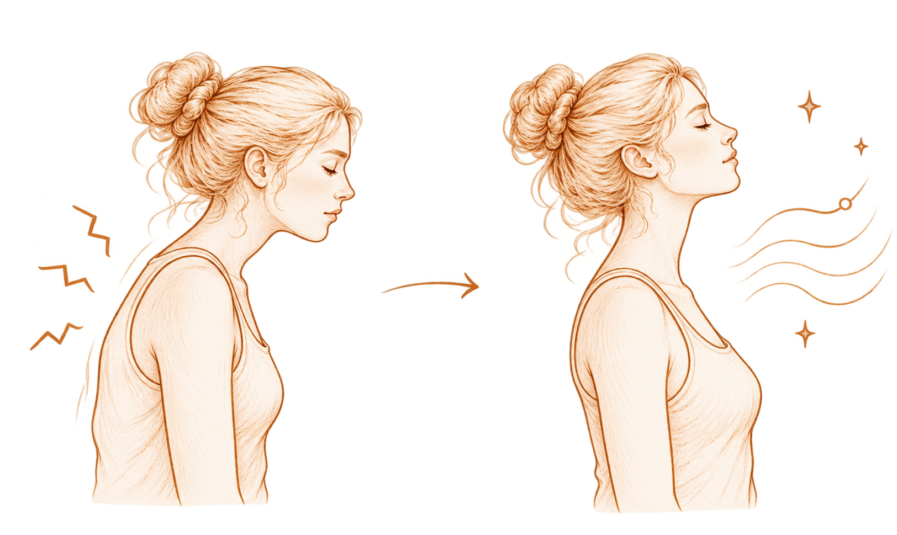
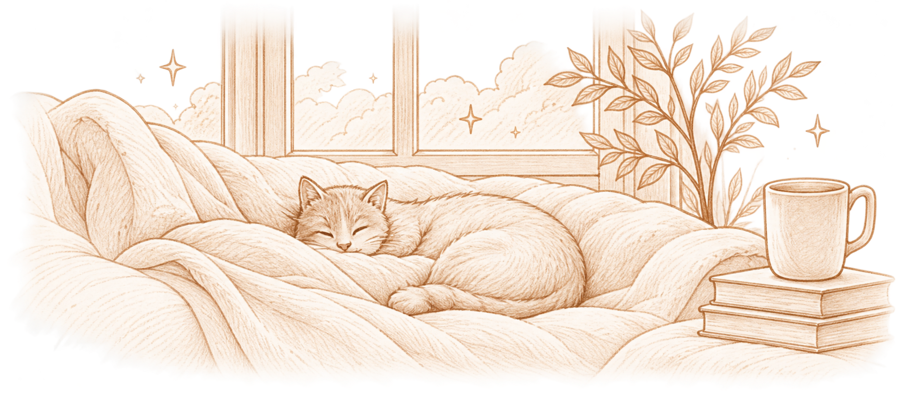

Почему после
массажа хочется
спать?
После массажа одолевает сонливость.
Почему так происходит и что в этот момент
происходит с организмом?
Вы были бодры и активны.
А после массажа вдруг хочется говорить тише,
двигаться медленнее и просто закрыть глаза.
Почему так происходит? Неужели массаж может настолько
быстро изменить состояние организма?
Мышцы наконец расслабляются
Мы часто даже не замечаем, сколько
напряжения удерживаем в течение дня:
плечи немного подняты, челюсть сжата,
спина сутулится, ноги находятся
в тонусе.
Во время массажа мышцы получают
возможность расслабиться, и привычное
напряжение постепенно уходит.
Тело становится более мягким и тяжёлым,
появляется ощущение тепла и спокойствия.


Кровь и жидкость начинают циркулировать активнее
Массаж воздействует на мягкие ткани и может усиливать местное
кровообращение. Специальные техники помогают и лимфатической
системе — поддерживают движение лимфы и отток жидкости.
Когда кровь и лимфа начинают циркулировать активнее, ткани получают
больше кислорода и питания, а лишняя жидкость легче уходит.
Из-за этого после массажа может появиться ощущение лёгкости, тепла,
а иногда — небольшая отёчность, например, на лице. Это естественная
реакция организма и часть процесса перераспределения жидкости.
После массажа тело переходит
в спокойный режим
Во время массажа нам не нужно никуда спешить,
держать себя в напряжении, думать о задачах
или отвечать на сообщения.
Внешних стимулов становится меньше, мышцы
расслаблены, дыхание замедляется.
Организм получает возможность снизить активность
и перейти в более спокойное состояние.


Почему именно хочется спать?
Когда тело расслабляется, мы наконец замечаем усталость, которая раньше оставалась
на фоне. Пока мы активны, мозг поддерживает бодрость: мы двигаемся, принимаем решения,
реагируем на людей и окружающую обстановку.
После массажа это напряжение снижается, и организм может почувствовать, что пришло
время отдыха. Сонливость — это естественная реакция на расслабление, улучшение
циркуляции и снижение общей активности. Тело словно говорит: «Теперь можно восстановиться».
Организм просто хочет продолжить отдых
Массаж помогает телу перейти из режима «надо» в режим «можно отдыхать».
Если после процедуры хочется немного полежать, закрыть глаза или даже поспать —
в этом нет ничего удивительного. Это не признак слабости, а естественное продолжение
заботы о себе.
